Consulte o site de ajuda Receba respostas mais rápido! As chances de que a sua pergunta já tenha sido respondida em um dos artigos de ajuda são grandes.
 O Task Explorer está fora do ar? Em raras situações, o Task Explorer vai ficar fora do ar para manutenção ou por causa de um erro inesperado. Se alguma coisa não estiver funcionando, verifique se ele não está indisponível.
 Obter suporte Precisamos de algumas informações para oferecer a você a melhor solução. Entre em contato por telefone, bate-papo, e-mail e muito mais